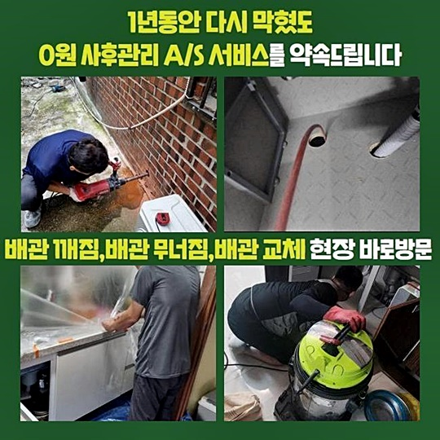
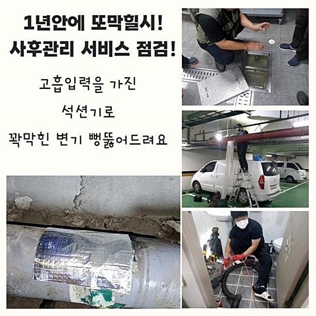
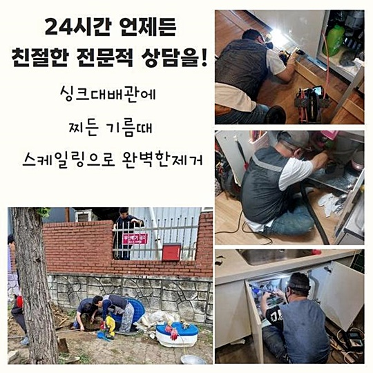
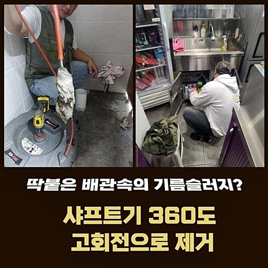
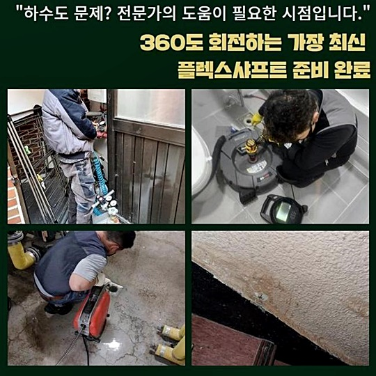

🏠 오전동변기역류 청계동 하수구뚫는업체 물샘전문업체
용인 싱크대막힘 전문 시공 후기

📋 작업 개요
- 위치: 용인
- 서비스 유형: 싱크대막힘, 변기막힘, 하수구막힘, 배관막힘, 누수수리, 역류해결, 뚫는업체, 배관청소, 고압세척, 악취차단
- 작업 일시: 2024. 8. 5. 4:02
- 업체명: 하수구수사대 (010-5615-2118)
🔍 문제 상황
오전동변기역류 청계동 하수구뚫는업체 물샘전문업체
평화로은 일상의 연속에서 느닷없이 하수파이프가 작동하지 않으면 곤란에 처하게 되겠죠
이번에는 배수관로에 고장이 났을때 해결할 수 있는 해결책들을 알려드릴테니 기억해두시면 도움이 되실겁니다
음식재료를 관리하는 주방 체계에 문제가 발생하면 그 시점부터 식사조차도 정시에 먹는게 어려워지니 굶게됩니다
그리고 불결한 하수가 되돌아오며 고약한 냄새까지 퍼지면서 불편하게 한다면 조금이라도 빨리 막힘상황들을 없애고자 움직입니다
취지는 좋다고 생각되지만 저희전문가는 비전문가라는 위치에서 배수구세척작업을 세밀하게 끝내는 것은 복잡하다고 이야기를 전해드립니다
주택의 폐수가 넘치게 된 상황에 이르렀다면 확실히 파이프 안쪽에 기름찌꺼기와 여러종류의 퇴적성분들이 혼재된 상태일테니 최신 기기 이용이 필요한 경우가 흔합니다
하수도막힘을 해결한 곳도 유사한 모습을 보였죠
화장실 내부엔 철벅거릴만큼 오수들이 솟구치고 있었고 불쾌한냄새도 대단히 많이 올라오고 있다고 했습니다
일부분의 물의 흐름이라도 만들어보려고 철사와 막대기를 이용하여 혼자서 시도를 해봤지만 손상된 하수도가 역류하게 되면서 밑바닥으로 물기가 흡수된 상태가 되어 굉장히 긴급함을 알리셨어요
급히 내방하여 문제 지점을 점검해보니 뒤죽박죽 어지러운 상황으로 보였고 더러운 오수에다가 오물들도 다량으로 넘쳐나와서 배수구 악취도 심각했습니다

🔎 원인 분석
💡 전문가 진단: 정밀 진단 장비를 사용하여 슬러지의 고착 여부를 판명하고 타격/세척 작업을 실시했습니다.
사방을 돌아보면서 여건들을 확인했는데 다행스럽게 개수대 하부에 설치된 주름파이프에는 문제가 발생하지는 않은것으로 판단되었습니다
자가로 수리를 해보다가 하수관이 부서지는 경우가 때때로 생깁니다
외관상의 조사를 마무리했으니 가구 하부의 하수관에 흡입 장비를 투입해서 주요 임무인 막힘 해결을 위한 첫 과정을 시행하였습니다
이 기기는 건식 형태가 아니고 남은 물도 없애는 성능이 내장되었기에 파이프를 말끔하게 만든 후 절차을 실행합니다
빼곡하게 출렁이는 하수를 없애는 절차에서 이물질도 같이 배출이 되는 경우도 있어요
강하게 흡입하여 수분을 제거했지만 배수함에 큼직한 오염요인으로 의심되는게 보이지 않았어요
시작하자마자 더러운 하수는 제거했으니 다음단계로 배수구 내부에 특수 카메라장치를 투입하여 배관 내부 점검을 실시했습니다
긴 호스 말미에 카메라 장비가 부착되어 어두컴컴하고 비좁은 하수구라도 막힘없이 여기저기 검사합니다
내시경기기를 통하여 확인되는 적색의 성분들이 지방질이 응집된 것인데 이 기름뭉텅이인 슬러지들이 걸려있는 더러운 현상이 보여졌어요
더 깊숙한 곳으로 이동하니 크기가 매우 커진 슬러지들이 포착되었습니다
하수구의 길만 협소해진 것이 아니라 안을 가득 채운 오염된원인이 보였어요
막힘현상을 일으킨 주된 원인들을 파악했기 때문에 발견한 사실들과 청소작업 절차를 공유하고 업무절차를 추진시킵니다

🔧 작업 과정
호스를 잡고서 내시경기기를 꺼내보았더니 끈적이는 기름잔여물들이 기계 외부쪽에 붙어있어 역한 악취가 사방에 퍼졌어요
더러움의 상태가 심했음을 나타내니 예상컨데 평소 곰팡이균들이 반복해서 생겼거나 지속적인 악취로 인한 고민도 있으실거라 생각되었습니다
하수관 내측을 말끔하도록 조치한다면 이와같은 불편사항까지도 해소할 수 있습니다
끈끈하게 뭉쳐진 오물들을 걸레로 닦아내고 반복하여 배수로안쪽에 배치시키고 계획을 세웠어요
커피가루나 실리콘 조각등의 고형물들이 쌓여있다면 고리를 이용하는 스타일로 해결할 수 있었겠지만 기름찌꺼기가 막힘의 발생요인이니 회전기능이 있는 샤프트기구의 도움을 받아야 하는 경우였습니다
샤프트장치는 배수관에 응고된 지방이나 이물질들을 잘게 쪼개어 외부로 추출하는데 주요한 기능을 하는 기기입니다
끝자락에 헤드쪽이 쇠사슬과 같이 강력해서 찐득거리는 지방을 해체하는 작업들도 효과적으로 해냅니다
주택의 배수구 막힘 이유가 잔여 오일찌꺼기라면 언제나 활용하는 장비중 한종류입니다
안을 비디오로 기록해서 차단이 된 구간을 분명하게 확인하며 차근히 세척작업을 실시했습니다
찌꺼기를 정밀하게 나누어 분쇄해주는 과정을 지나면 이후 흡입장치를 사용해 흡입하여 위로 빼내면서 말끔한 하수구로 변해갔습니다
잘게 분쇄된 오염물질들을 압박을 가하며 밀어내리면 하부에 누적되어서 해결하기 까다로운 사태까지 생길수 있어 작업의 자취는 흡입장비로 불편하지만 흡입하는 절차를 언제나 수행합니다
여러가구가 함께 쓰고 있는 큰규모의 하수관리 시스템에 많은 이물질들로 문제가 일어나면 작업의 양이 엄청나니 압력을 가하여 배출하는 수법을 활용합니다
주택 내부 배수관 문제들이 일어난 상태라면 발견한 문제요인을 개선하는 것에 중점을 두고 정비하고 있습니다
좀 번잡할 수 있어도 청결하게 배수관 내부 환경을 향상해 놓으면 동일한 이유들로 시간을 낭비하며 사용하지 않을거예요
이왕에 작업을 진행하는 김에 철저하게 수행해서 문제요인은 물론이고 미래의 상황 예측까지 철저히 담당하는게 하수도 정비전문인의 임무라고 여기고 있어요
싱크대 하수구 수리를 모두 끝낸다음 작업구역을 다시 점검하니 물이 깨끗하게 흐르고 있음을 확인했습니다
붉은 오염원들이 잔류하지 않고 모두 다 끄집어내서 없앴으니 동일한 문제 상황들이 재발생하게 될 확률이 극히 적다고 할 수 있죠
눈으로 본 정보를 파악하고나면 구체적인 개선들을 확인하고자 통수 테스트를 해보았어요
우리들이 간과했던 시스템 오류나 막힘 위치가 잔재할 가능성도 있어 물을 가득히 채워 하수관 속으로 흘려넣었어요


✅ 작업 완료
다행이 막힘없이 매끄럽게 배출되기에 오늘의 수리작업이 순조로움을 안심하게 되었어요
다양한 장치로 급하게 뚫어보다가는 배수구가 파손되어 막대한 손실들이 생길수 있기 때문에 배수관 수선 전문작업자를 알아보고 문의하신 후 난관을 극복하시라고 제안드립니다
배관 막힘 문제는 빠른조치가 상당히 중요한데 전국 어느곳이든 한시간 이내에 도착할 수 있기 때문에 불안감을 느끼지 않으셔도 됩니다
추가로 명백한 요금 계산으로 재정적 부담감 역시 능동적으로 낮추고자 하오니 깊이 생각하지 마시고 맡겨주신다면 즉시 찾아뵙겠습니다
상세한 분석을 기반으로 완벽히 깨끗한 배수구관리를 실현하여 만족시켜 드릴게요


⚠️ 베란다 누수 및 방수 관리 방법
- ✅ 비가 많이 올 때 창틀 주변이나 아래층 천장에 얼룩이 생기는지 정기적으로 확인해 보세요.
- ✅ 우수관 주변 실리콘 마감이 들뜨거나 깨진 틈새가 있는지 손상 여부를 수시로 체크하세요.
- ✅ 베란다 바닥 타일의 줄눈(메지)이 소실되면 그 틈으로 물이 침투하여 누수가 유발됩니다.
- ✅ 누수 의심 증상 발견 시 방치하면 아래층 손실이 커지므로 즉시 전문가의 진단을 받으십시오.
💡 핵심 정리
- 확실한 장비 작업(내시경 점검 및 샤프트 스케일링)으로 원인을 뿌리 뽑습니다.
- 작업 후 1년 이내에 동일한 부위 재발 시 100% 무상 A/S 서비스를 보장합니다.
- 서울 · 경기 · 인천 전 지역에 24시간 언제든 긴급 출동할 수 있도록 항시 대기 중입니다.
❓ 자주 묻는 질문 (FAQ)
🚨 용인 싱크대막힘 문제로 고민이신가요?
정확한 원인 진단과 확실한 시공으로 재발 없는 해결을 약속드립니다.
24시간 긴급 출동 | 서울 · 경기 · 인천 전지역 | 1년 내 재발 시 무상 A/S